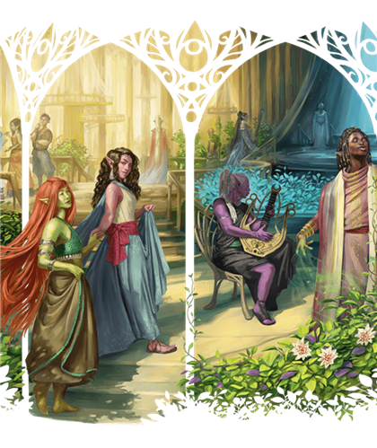

Créés par le dieu Corellon, les premiers elfes pouvaient changer de forme à volonté. Ils perdirent ce don lorsque Corellon les maudit après leur complot avec la déesse Lolth, qui tenta sans succès d'usurper son autorité. Quand Lolth fut rejetée dans l'Abysse, la majorité des elfes la renia et obtint le pardon de Corellon, mais le pouvoir perdu ne revint jamais.
Privés de métamorphose, les elfes se retirèrent dans la Feywild, puis beaucoup explorèrent d'autres plans, dont le Plan Matériel. Ils ont des oreilles pointues, n'ont ni barbe ni pilosité corporelle marquée, vivent autour de 750 ans et ne dorment pas: ils entrent en transe, conscients de leur environnement, plongés dans leurs souvenirs et méditations.
Lignee elfique
Vous appartenez a une lignee qui vous accorde des capacites surnaturelles. Choisissez une lignee dans la table ci-dessous; vous gagnez son benefice de niveau 1.
Aux niveaux 3 et 5, vous apprenez le sort indique. Vous l'avez toujours prepare, vous pouvez le lancer une fois sans emplacement de sort, et vous recuperez cet usage apres un repos long. Vous pouvez aussi le lancer avec vos emplacements de sort appropries.
L'Intelligence, la Sagesse ou le Charisme est votre caracteristique d'incantation pour ces sorts (au choix lors de la selection de la lignee).
| Lignee elfique | Niveau 1 | Niveau 3 | Niveau 5 |
|---|---|---|---|
| Drow | Votre vision dans le noir passe a 36 m. Vous connaissez aussi le tour de magie Dancing Lights. | Faerie Fire | Darkness |
| Haut-elfe | Vous connaissez le tour de magie Prestidigitation. A chaque repos long, vous pouvez le remplacer par un autre tour de magie de la liste de Magicien. | Detect Magic | Misty Step |
| Elfe des bois | Votre vitesse passe a 10,50 m. Vous connaissez aussi le tour de magie Druidcraft. | Longstrider | Pass without Trace |